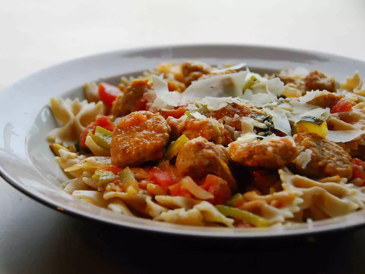

HOME
Linguini Primavera

Description
Italian dish made of layers of pasta, meat or vegetables, and cheese, typically served with a tomato-based sauce..
Ingredients
- cup fresh broccoli florets
- cup fresh cauliflower florets
- medium carrots, thinly sliced (1 cup)
- small onion